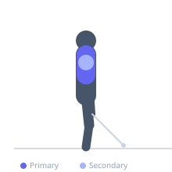
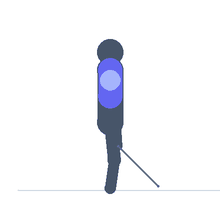

Exercise guide / Cable Iron Cross
Cable Iron Cross
The cable iron cross is a chest isolation exercise that mimics the gymnastic iron cross position. Standing between two high cable pulleys, the athlete holds a handle in each hand with arms extended to the sides at shoulder height, then pulls both cables downward and inward to meet at the midline. The constant cable tension provides consistent pectoral loading through the entire arc of motion.
Primary muscles
pectoralis major sternal
Secondary muscles
pectoralis major clavicular
deltoid anterior
Stabilizers
triceps long head
infraspinatus
Equipment
Cable Machine (Dual Pulley / Functional Trainer)


Starting position
- Stand centered between two high cable pulleys set at shoulder height or above. Grip a single handle in each hand with arms extended straight out to the sides, forming a T-shape. Step slightly forward to put tension on the cables.
Setup
- Set both pulleys to the highest position on a functional trainer. Attach single-grip handles to each cable. Select equal weight on both sides.
Steps
- Step 1: Stand tall with arms extended out to the sides at shoulder height, slight forward lean from the hips.
- Step 2: Keeping arms as straight as possible (elbows almost locked, very slight bend), pull both handles downward and inward in a large arc.
- Step 3: Bring hands together at hip or lower-chest level, squeezing the pectorals at peak contraction.
- Step 4: Slowly return to the start position, resisting the cable pull and feeling the chest stretch.
Coaching cues
- Keep the elbows almost locked — this is not a crossover
- Think of the hands moving in a wide circle rather than a straight line
Breathing
- Exhale as hands come together toward the midline. Inhale as you return to the starting position.
Range of motion
- Full extension of arms to the sides with a wide arc downward to the midline. The straighter the arms, the greater the pectoral demand.
Tempo
- 3-1-2-1 (3s arc, 1s squeeze, 2s return, 1s hold)
Common mistakes
- Bending the elbows and turning the movement into a cable crossover
- Using momentum by swinging the torso
- Setting cables too heavy, compromising straight-arm position
Safety
- Keep weight light — this movement has poor mechanical leverage with straight arms
- Avoid if experiencing shoulder impingement or rotator cuff issues
Training
- hypertrophy: 10–15 reps
- endurance: 15–20 reps
- hypertrophy: 3–4 sets
- endurance: 2–3 sets
- Rest: {'hypertrophy': 75, 'endurance': 45}